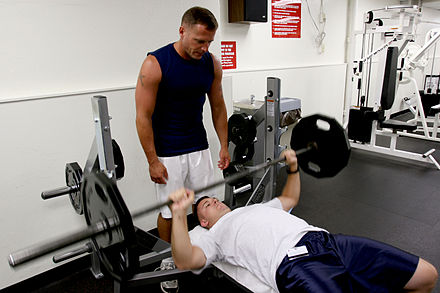

벤치에 등을 대고 누워서 역기를 가슴 높이까지 내렸다가 굽힌 팔꿈치를 쭉 펴면서 들어 올리는 방식으로 실시한다.
이 운동이 목표하는 것은 대흉근의 발달이다. 또한 이 운동에서는 삼각근과 상완삼두근이 보조적인 역할을 하므로 이들도 동시에 자극이 되고, 어깨 주변 근육들과 승모근도 어깨 관절을 안정시키기 위해 동작하므로 부수적으로 단련할 수 있다.

시작자세
1. 벤치에 누워 두 발을 바닥에 고정해주세요.
2. 어깨를 뒤로 당긴 후 고정하여 어깨가 가슴보다 뒤에 위치하게 합니다.
3. 허리는 자연스러운 아치 모양이 되게 해주세요.
4. 어깨너비보다 조금 넓게 바벨을 두 손으로 잡아주세요.
5. 허리와 어깨를 고정한 채로 바벨을 들어 바벨을 가슴 위에 위치하게 합니다.